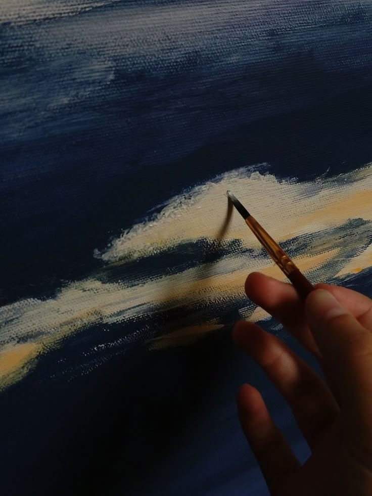
PAINTING/DRAWING
I have always drawn, without any particular style. I have often painted small pictures in a minimalist style for my family and friends. Recently, I have started drawing with alcohol markers. Here are some recent examples of my works.
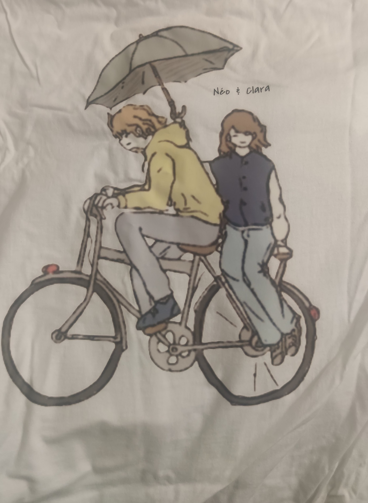
drawing on a t-shirt for a Christmas present
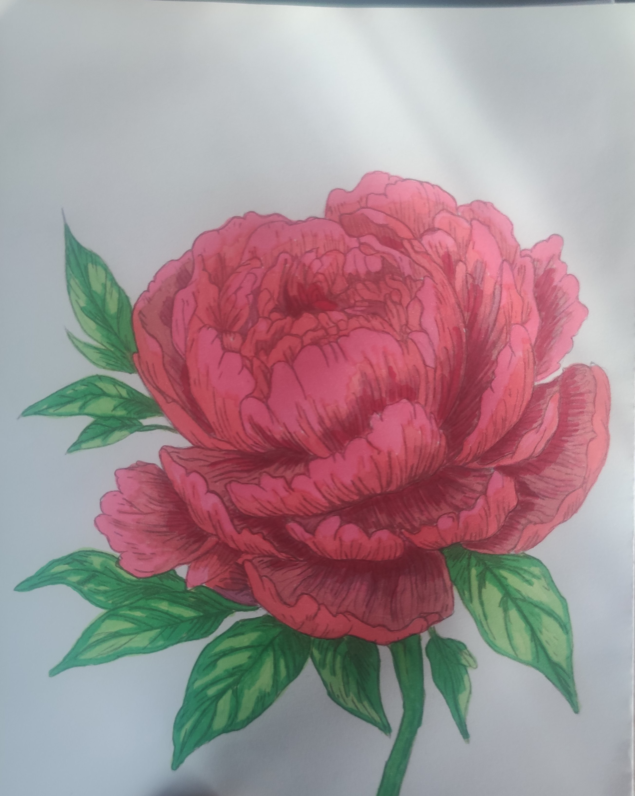
Peony with alcohol marker
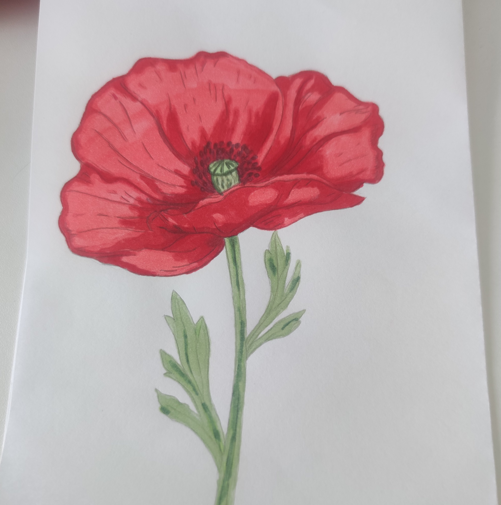
Poppy with alcohol marker
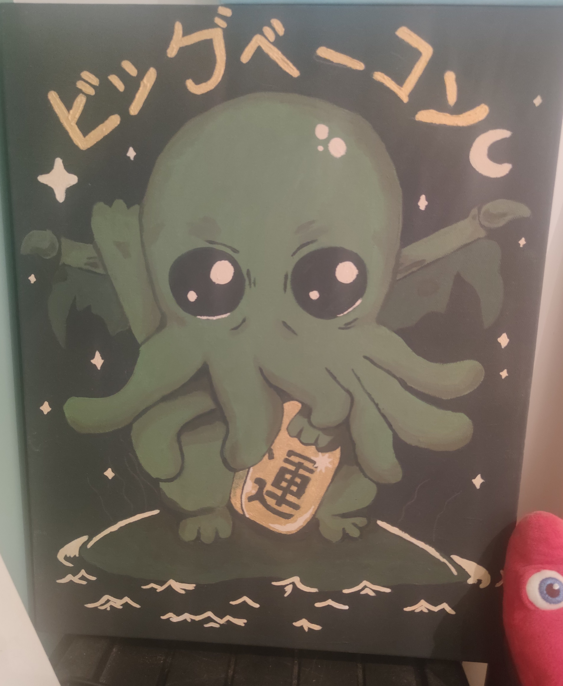
Painting for my family
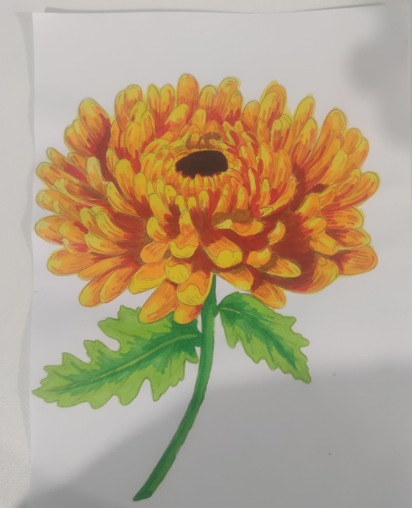
Chrysanthemum with alcohol marker
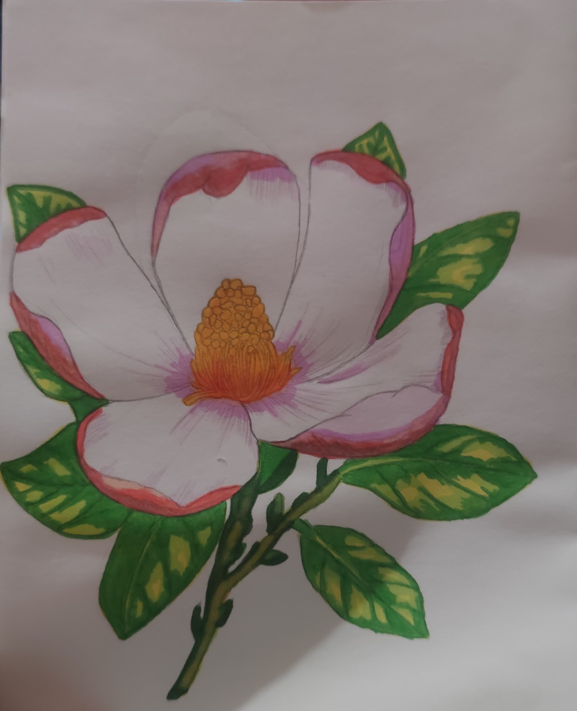
magnolia flower with alcohol marker
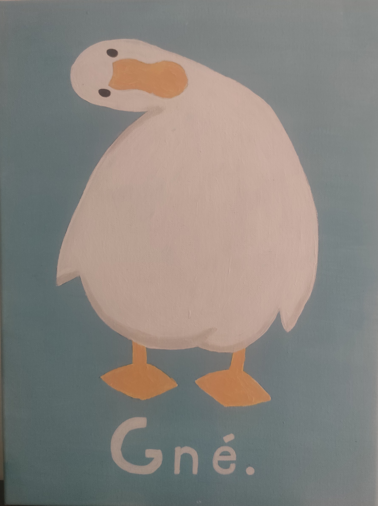
simple painting
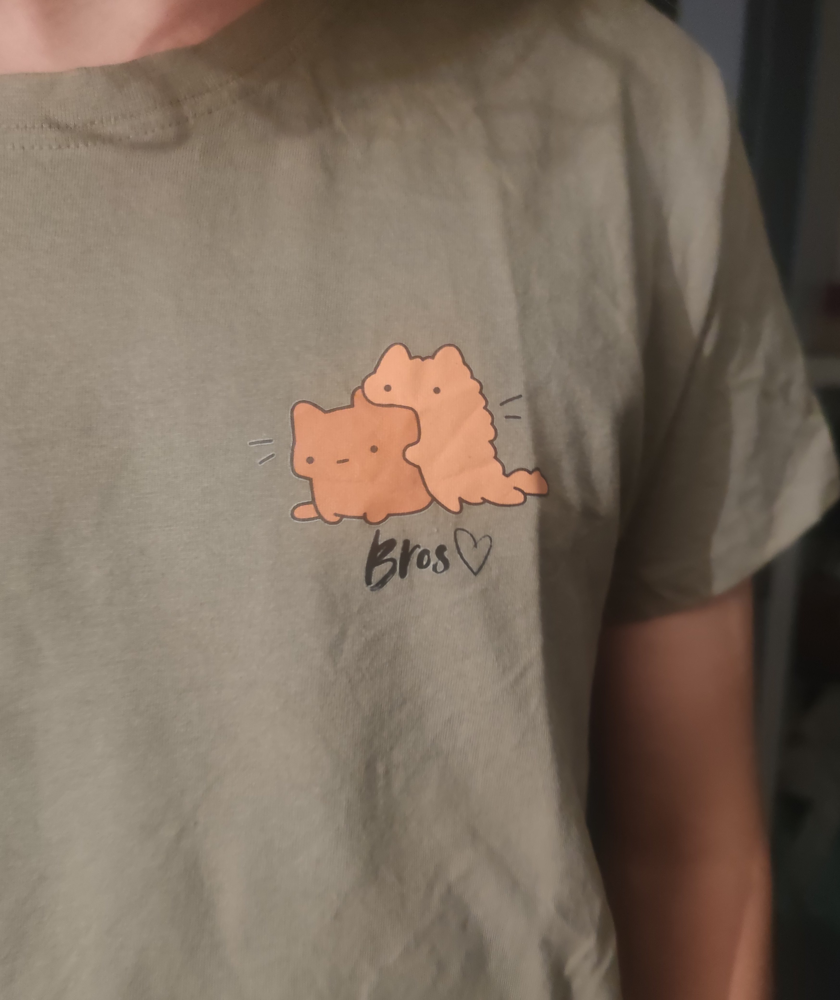
drawing on a t-shirt for a present
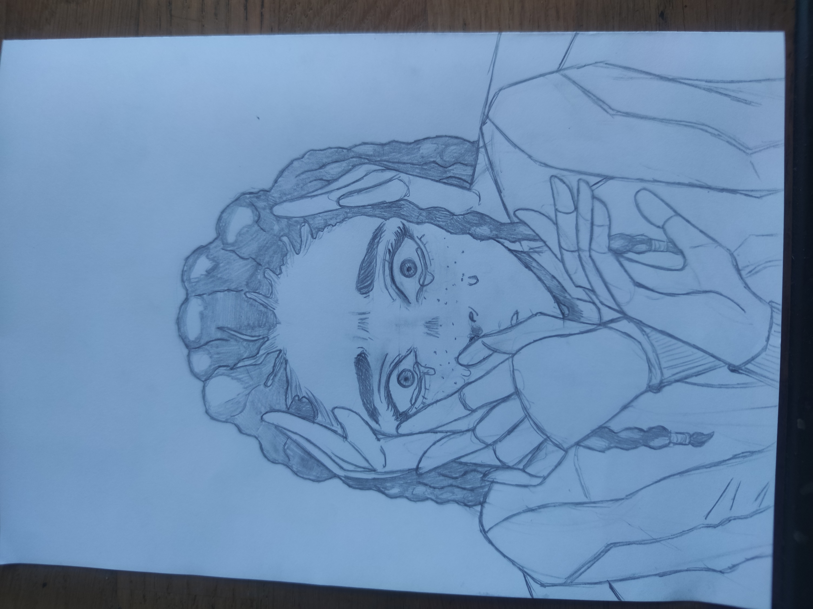
First drawing in a series of drawings on the theme of the “Three Wise Monkeys.”
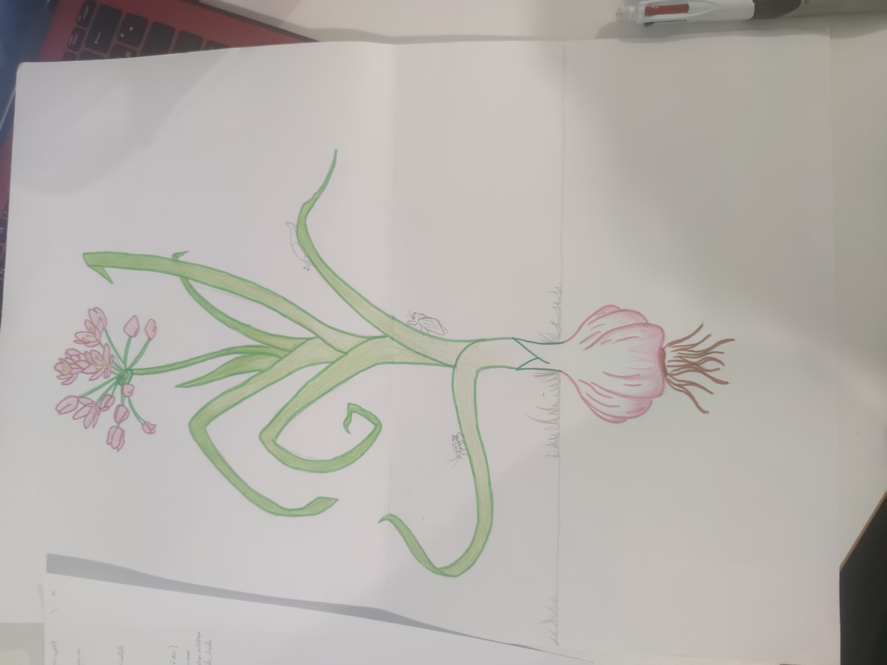
drawing of a garlic